Halo lagi, Detektif!
Minggu lalu kamu belajar mengenali ruang publik digital dan risikonya. Sekarang kamu naik level: menjadi Tim Pakar Muda yang menganalisis lima insiden berantai, menilai mana yang paling berbahaya, lalu merancang protokol pengamannya.
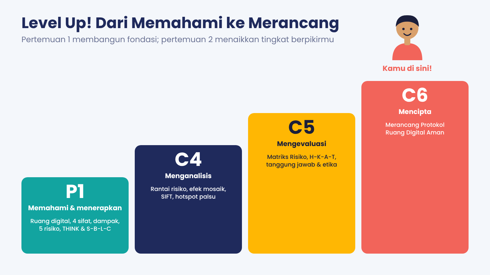
- Menganalisis rantai risiko dan akarnya.
- Menilai risiko dengan Matriks Risiko dan memilih respons H-K-A-T.
- Memeriksa jejak (efek mosaik), kabar (SIFT), dan jaringan (hotspot palsu).
- Merancang Protokol Ruang Digital Aman.
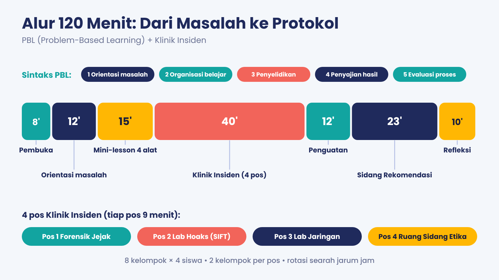
Cerita: Pekan Gaduh Digital di SMP Bahari
SMP Bahari adalah sekolah rekaan, tetapi kejadiannya bisa terjadi di mana saja. Buka tiap hari dan cari apa yang saling terkait.
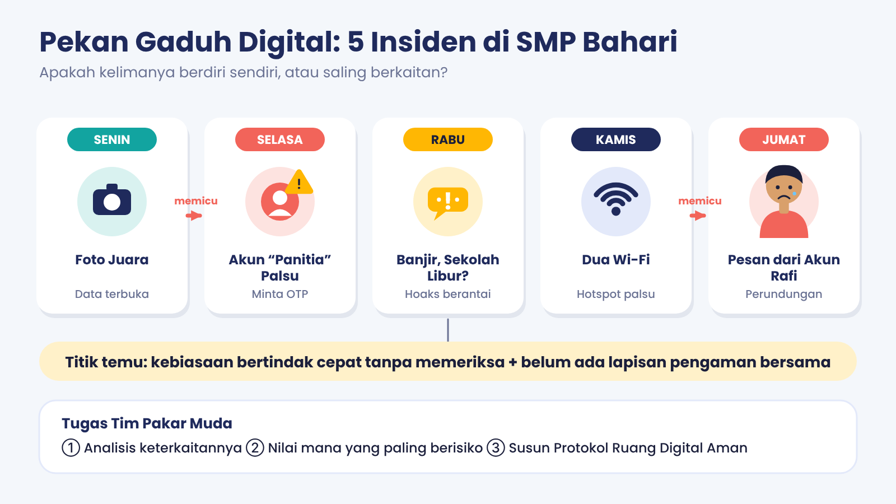
Senin Foto Juara
Salsa (kelas IX-B, SMP Bahari) menjuarai lomba voli antar-SMP. Ia membagikan beberapa unggahan di akun publiknya karena bangga dan ingin teman-temannya ikut senang.
Dikerjakan di Pos 1.
Selasa Akun ‘Panitia’ Palsu
Sehari kemudian, akun baru @panitia.lomba.bahari mengirim pesan langsung kepada Salsa dan lima temannya: “Selamat Salsa! Tim voli terpilih menerima beasiswa Rp1.000.000 per orang. Isi data di [tautan pendek] dalam 1 jam atau hangus. Kirim juga kode OTP yang masuk ke WhatsApp-mu untuk verifikasi.” Tiga siswa mengisi data. Satu di antaranya kehilangan akses ke WhatsApp-nya sore itu.
Dikerjakan di Pos 1.
Rabu Banjir Besar, Sekolah Libur?
Pagi hari beredar pesan berantai di grup kelas dan grup orang tua: “‼️INFO PENTING‼️ Kata orang Dinas Pendidikan BESOK SEMUA SEKOLAH LIBUR karena BANJIR BESAR. Ini fotonya, air sudah setinggi dada di depan sekolah!!! TOLONG SEBARKAN ke semua grup biar tidak ada yang kehujanan 🙏”. Hanya dalam tiga jam pesan itu muncul di 40 grup. Keesokan harinya 38 siswa tidak masuk dan ulangan harian tertunda.
Dikerjakan di Pos 2.
Kamis Dua Wi-Fi di Pekan Literasi
Saat Pekan Literasi, poster resmi menyebut jaringan SMPBahari_Literasi (bersandi, sandinya dibagikan panitia). Di dekat kantin juga muncul jaringan SMPBahari_Free tanpa sandi dengan sinyal sangat kuat. Rafi (kelas IX-B) menyambung ke jaringan itu. Muncul halaman ‘Masuk dengan akun media sosial untuk lanjut’; Rafi mengetik nama pengguna dan kata sandi yang ia pakai juga di portal tugas dan tiga akun lain.
Dikerjakan di Pos 3.
Jumat Pesan dari Akun Rafi
Pukul 02.14 dini hari, akun Rafi mengirim pesan kasar kepada Dimas di grup kelas IX-B. Pagi harinya 14 siswa sudah membaca. Enam membalas dengan mengejek Rafi, tiga membuat stiker wajah Rafi bertuliskan ‘tukang bully’, lima hanya membaca, dan satu (Nina) mengirim pesan pribadi kepada Rafi: “Itu bukan kamu kan? Aku simpan tangkapan layarnya, ayo lapor ke Bu Guru.” Rafi menolak berangkat sekolah.
Dikerjakan di Pos 4.
Empat Alat Berpikir Pakar Muda
Matriks Risiko
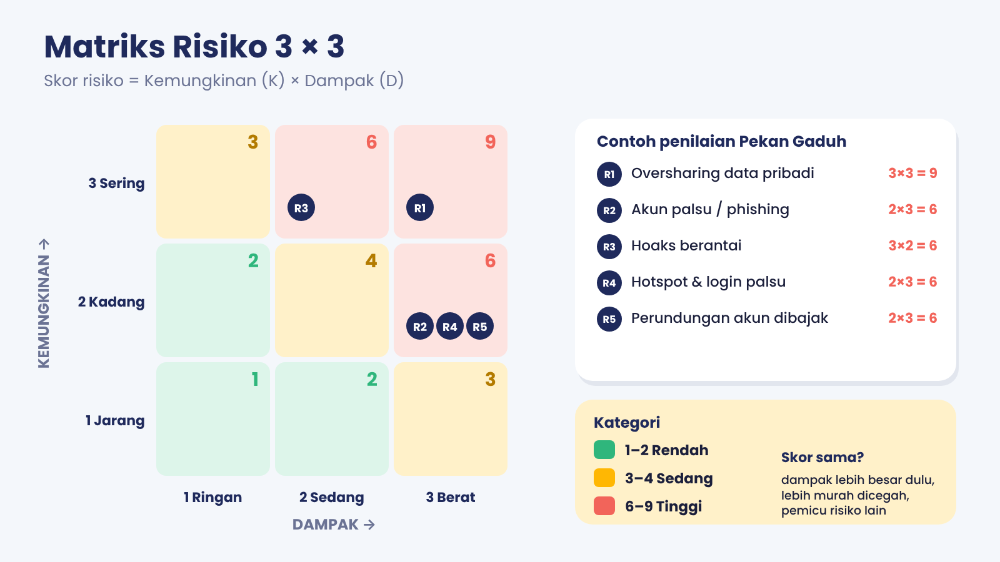
Tidak semua risiko perlu ditangani sekaligus. Matriks Risiko membantu memilih mana yang didahulukan.
Kemungkinan (K): 1 = jarang (paling banyak sekali setahun di sekolah), 2 = kadang (beberapa kali per semester), 3 = sering (hampir tiap bulan atau lebih).
Dampak (D): 1 = ringan (cepat selesai, tidak ada kerugian lanjutan), 2 = sedang (kerugian emosi atau data terbatas, perlu bantuan), 3 = berat (keamanan fisik terancam, akun dibobol luas, trauma, absen berhari-hari).
Skor = K × D. 1–2 = Rendah, 3–4 = Sedang, 6–9 = Tinggi. Nilai 5, 7, dan 8 tidak mungkin muncul pada skala 1–3.
Aturan penentu prioritas jika skor sama: (1) dampak lebih besar didahulukan, (2) pencegahan lebih murah, (3) risiko yang menjadi pemicu risiko lain.
H-K-A-T: empat respons risiko
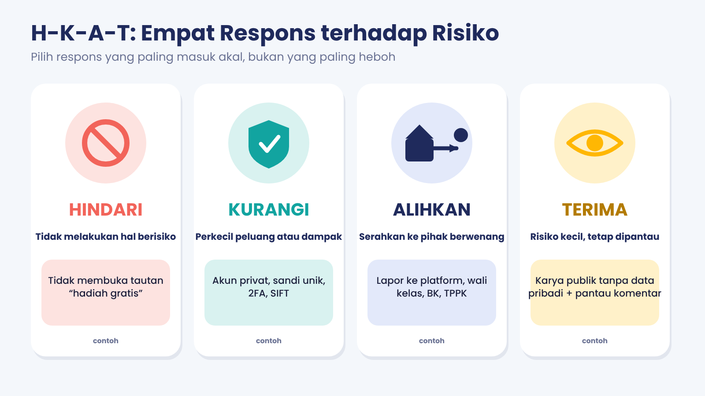
Hindari: tidak melakukan aktivitas berisiko (tidak membuka tautan hadiah dari akun asing).
Kurangi: memperkecil kemungkinan atau dampak (akun privat, kata sandi unik, 2FA, SIFT sebelum meneruskan).
Alihkan: menyerahkan penanganan kepada pihak yang berwenang atau lebih mampu (melapor ke platform, wali kelas, guru BK, TPPK, orang tua).
Terima: menyadari risiko kecil yang tersisa dan memantaunya (mengunggah karya di akun publik tanpa data pribadi sambil memantau komentar). ‘Terima’ bukan berarti ‘cuek’.
Lapisan Pengaman
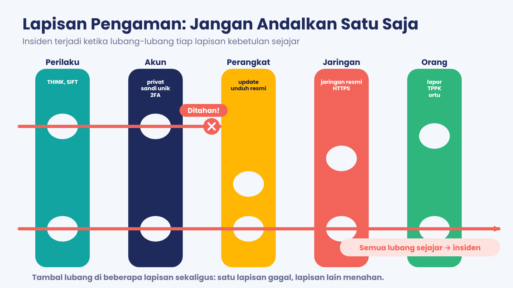
Bayangkan irisan keju berlubang. Satu irisan punya lubang, tetapi beberapa irisan yang ditumpuk jarang berlubang pada titik yang sama. Insiden terjadi ketika semua lubang kebetulan sejajar (gagasan ini dikenal sebagai ‘model keju Swiss’ dari James Reason).
Lima lapisan untuk ruang digital: Perilaku (THINK, SARING/SIFT), Akun (privat, kata sandi unik, 2FA), Perangkat (pembaruan, tidak sembarang mengunduh), Jaringan (jaringan resmi, HTTPS, data seluler untuk hal penting), Orang (lapor, TPPK, orang tua).
Tujuan analisis: temukan lapisan mana yang berlubang pada setiap insiden, lalu tambal sebelum lubang-lubang itu sejajar.
Rantai Risiko & 5 Mengapa
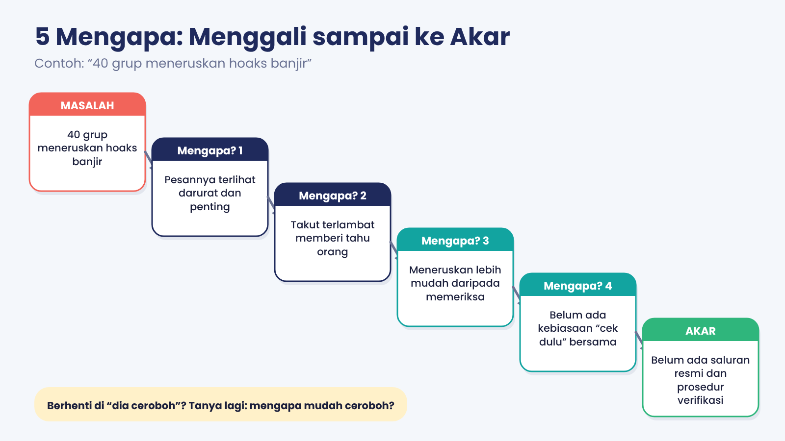
Insiden jarang berdiri sendiri. Satu kejadian bisa memicu kejadian lain (rantai risiko: pemicu → kerentanan → insiden → dampak).
5 Mengapa adalah teknik bertanya ‘mengapa?’ berulang (lima kali atau lebih sedikit) sampai ditemukan penyebab yang bisa diperbaiki. Jawaban yang berhenti pada ‘karena dia ceroboh’ belum akar masalah: tanyakan lagi mengapa kecerobohan itu mudah terjadi.
Intervensi terbaik memutus rantai pada titik yang paling awal, paling murah, dan paling mungkin dilakukan semua orang.
Simulator Matriks Risiko
Kartu H-K-A-T (klik untuk membalik)
Klinik Insiden: 4 Pos Penyelidikan
Bekal konsep tiap pos, plus permainan mini. Buka satu per satu.
Pos 1 · Forensik Jejak
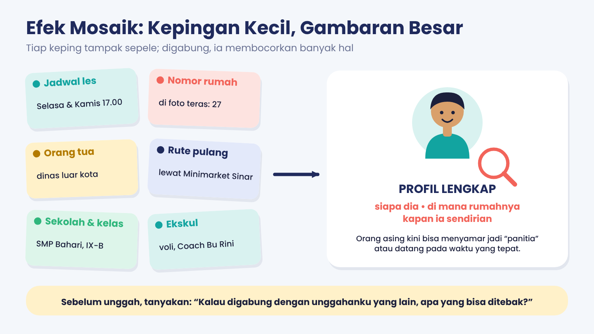
Efek mosaik & rekayasa sosial
Efek mosaik: potongan informasi yang tampak sepele, jika digabung, membentuk gambaran utuh tentang seseorang: siapa dia, di mana dia, kapan sendirian. Tiap keping aman sendirian, berbahaya jika dikumpulkan.
Rekayasa sosial (social engineering): membujuk orang agar menyerahkan data atau tindakan tertentu dengan memanipulasi psikologi (rasa senang, takut, buru-buru), bukan dengan membobol sistem. Tanda khasnya: hadiah tak terduga, batas waktu singkat, permintaan kode OTP atau data pribadi.
Kode OTP bersifat rahasia; tidak ada panitia, bank, atau platform resmi yang meminta OTP lewat pesan.
UU PDP (UU 27/2022) Pasal 4 membedakan data pribadi umum (misalnya nama lengkap, jenis kelamin, kewarganegaraan, agama, status perkawinan) dan spesifik (kesehatan, biometrik, genetika, catatan kejahatan, data anak, keuangan pribadi). Pasal 25 mensyaratkan persetujuan orang tua/wali untuk pemrosesan data anak, dan Pasal 8 memberi hak mengakhiri pemrosesan serta menghapus data. (Cek ulang pada teks resmi terbaru.)
Pos 2 · Lab Hoaks (SIFT)
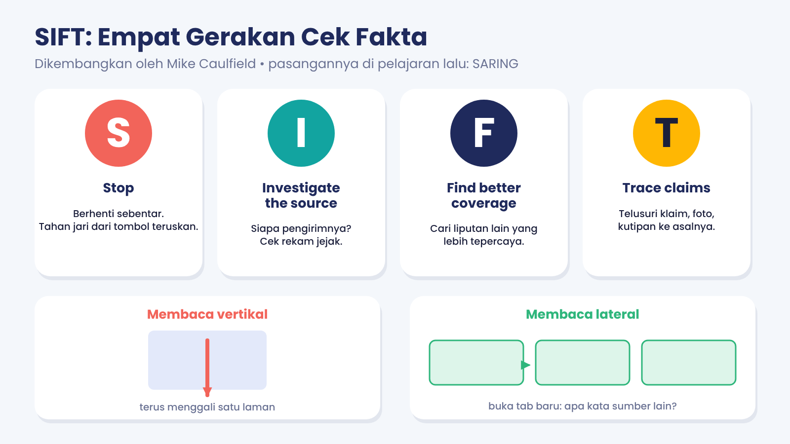
SIFT & membaca lateral
SIFT (Mike Caulfield): Stop (berhenti sebentar), Investigate the source (selidiki sumbernya), Find better coverage (cari liputan lain yang lebih tepercaya), Trace claims (telusuri klaim, kutipan, dan media ke konteks aslinya).
Membaca lateral: alih-alih menggali satu laman terus ke bawah, buka tab baru dan cari tahu apa kata sumber lain tentang laman atau akun itu. Pemeriksa fakta profesional bekerja dengan cara ini.
Hubungan dengan SARING (pertemuan 1): Sumber = Investigate; Asal-usul (kapan, di mana) = Trace; Resmi/liputan lain = Find better coverage; Ragu jangan teruskan = Stop.
Jenis penyesatan yang perlu dibedakan: salah total (dikarang), konteks salah (foto atau video asli, tetapi dipakai pada peristiwa lain), menyesatkan (sebagian benar, disusun mengecoh), belum terbukti (belum ada bukti cukup).
Pos 3 · Lab Jaringan
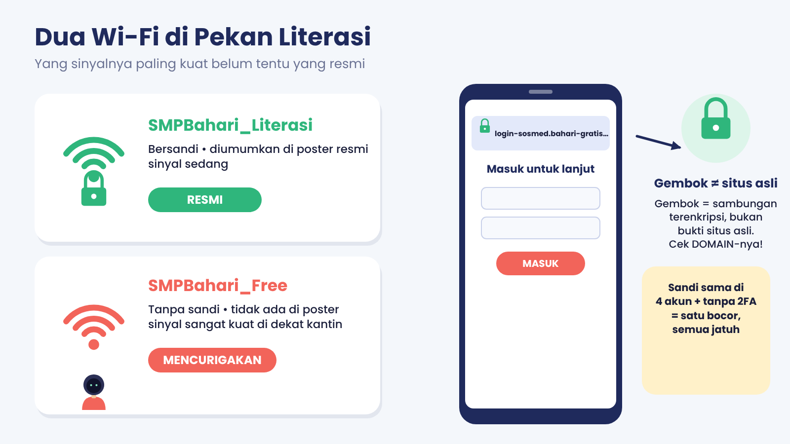
Hotspot palsu, HTTPS, dan login palsu
Hotspot palsu (evil twin): titik akses yang meniru nama jaringan asli atau memakai nama menggoda (‘Free’, ‘Gratis’) agar orang menyambung. Siapa pun yang menyambung bisa terlihat lalu lintasnya oleh pemilik hotspot.
Halaman login palsu (phishing): tampilan mirip aslinya, tetapi alamatnya (domain) berbeda. Periksa domain, bukan hanya logo.
HTTPS/gembok berarti koneksi antara perangkatmu dan situs itu terenkripsi. Itu tidak membuktikan bahwa situsnya asli atau jujur: situs penipuan pun bisa memakai HTTPS.
VPN memindahkan kepercayaan dari pemilik hotspot ke penyedia VPN; bukan perisai ajaib. Gunakan penyedia tepercaya.
Kata sandi unik + 2FA: jika satu akun bocor, akun lain tidak ikut jatuh. Kode 2FA/OTP tidak pernah dibagikan.
Pos 4 · Ruang Sidang Etika
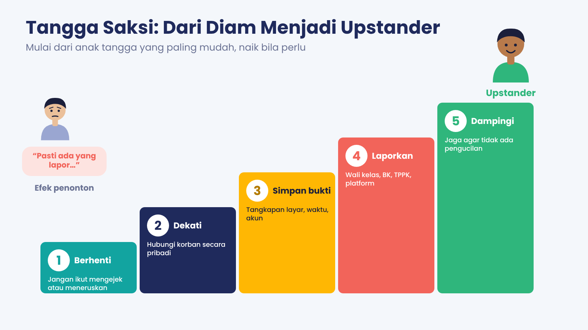
Tangga saksi & praduga yang adil
Efek penonton (bystander effect): makin banyak orang yang menyaksikan, makin kecil rasa tanggung jawab tiap orang untuk bertindak (Darley dan Latané, 1968). Di grup besar, ‘pasti ada yang melapor’ adalah jebakan.
Upstander: saksi yang bertindak. Tindakannya tidak harus heroik: dukungan pribadi, menyimpan bukti, dan melapor sudah menolong.
Akun dibajak ≠ pemilik akun pelaku. Menuduh dan mengucilkan pemilik akun sebelum ada verifikasi menambah korban baru. Periksa petunjuk (waktu, perangkat, gaya bahasa, keterangan saksi) dan serahkan penyelidikan kepada pihak berwenang.
Jalur sekolah: Permendikbudristek 46/2023 mengatur pencegahan dan penanganan kekerasan (termasuk perundungan dan kekerasan di ranah digital) di satuan pendidikan; sekolah membentuk TPPK (Tim Pencegahan dan Penanganan Kekerasan) yang menerima laporan, mendampingi, dan memulihkan korban.
Pendekatan restoratif: fokus pada pemulihan korban dan hubungan, bukan semata hukuman. Untuk pelaku anak, sistem hukum mengutamakan pembinaan (UU SPPA, diversi). Cek ulang pada teks resmi terbaru.
- Senin: data Salsa terbuka (efek mosaik) → Selasa: akun palsu memanfaatkan data itu → data/OTP bocor.
- Rabu: hoaks (kelompok risiko terpisah) memperlihatkan budaya ‘teruskan dulu’ yang sama.
- Kamis: hotspot palsu + sandi sama → akun Rafi dibajak → Jumat: pesan kasar → perundungan dan pengucilan.
- Akar bersama: kebiasaan bertindak cepat tanpa verifikasi, ditambah belum adanya lapisan pengaman bersama (saluran resmi, prosedur lapor, aturan jaringan).
Dari Penyelidikan ke Protokol
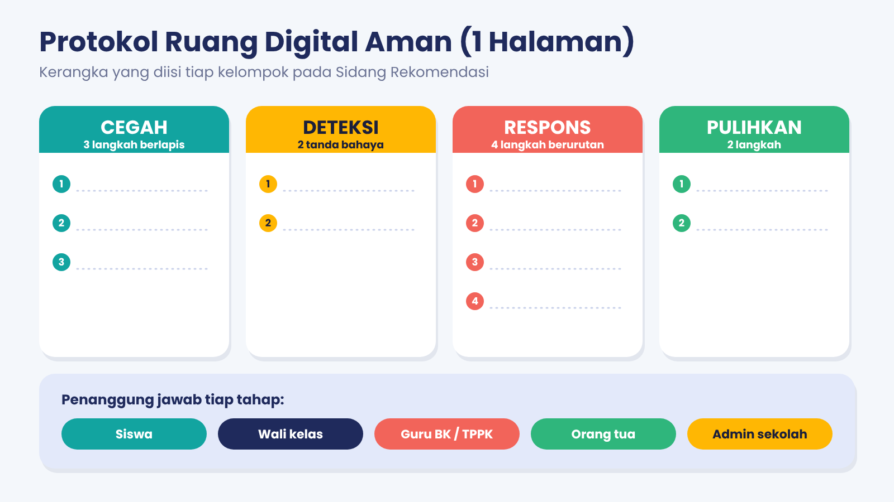
- Cegah (3 langkah berlapis)
- Deteksi (2 tanda bahaya)
- Respons (4 langkah berurutan)
- Pulihkan (2 langkah)
- Penanggung jawab tiap tahap
Coba isi kerangka mini
Kuis Dadakan
Skor: 0